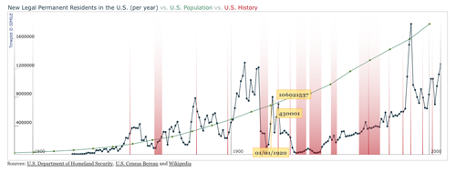

Open Science Timeplot 
Timeplot is a DHTML-based AJAXy widget for plotting time series and overlay time-based events over them.
Timeplot supports these features: written in javascript and DHTML, needs no browser plugin installataion, client-side requiring no server-side software installation, highly modular allowing for adding in custom time series processing algorithms or layout geometries. It's also open source (BSD).
15 ratings
203 users since October 5, 2008
(90 scientists, 100 faculty, 10 students, 3 other)
Category: View widget
Domain: General
User tags: simile, time

Screenshots

U.S. residency research on a Timeplot
Comments (2)
- Timeplot is really quite an awesome project, and so pretty too! masont on July 27, 2007
- Fantastic, and we'll make good use of this in our public health surveillance and monitor applications. tchurches on July 29, 2007
- The plot is really nice. Thanks for the nice job. elms on March 6, 2008
Support Forum - Latest Topics
- Timeplot decimal numbers from th424
2 replies, updated February 22, 2009 - Trying to display inline data from agio
no replies, updated February 3, 2009 - Year labels are shifted from ploi
10 replies, updated January 20, 2009 - IE display issues from fredk
23 replies, updated January 7, 2009